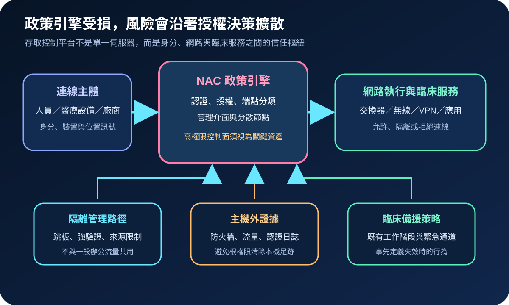
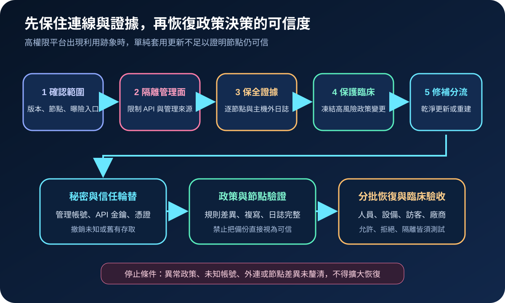
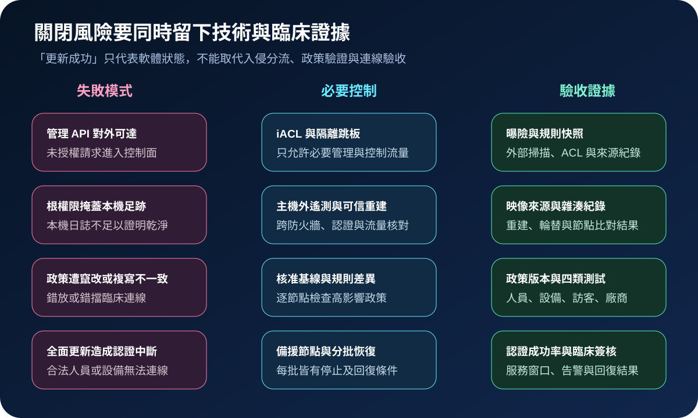

醫療資安國際觀察 · 2026-09-20
NAC 政策引擎遭利用時，醫院如何恢復可信存取：從管理面隔離到臨床驗收
作者：Dr. William｜醫療資訊與資安治理實務工作者
網路存取控制（NAC）平台決定哪些人員、設備與廠商可進入哪些網段。政策引擎若遭繞過並取得高權限，風險不只在管理主機，而會延伸到身分判定、隔離規則與臨床連線。
名詞解釋：政策引擎是授權決策的控制面
NAC依身分、裝置狀態、位置與規則決定允許、拒絕或隔離；政策引擎集中執行認證與授權決策；iACL則用網路基礎設施限制管理與控制平面的來源。當平台可能取得 root 等級權限時，可信重建代表以已知乾淨映像恢復節點、輪替秘密並驗證政策，而非只安裝修補程式。
國際現況與適用邊界
Cisco 於 2026 年 9 月 16 日公告 CVE-2026-76460，指出 Cisco ISE 與 ISE-PIC 的 API 驗證控制不足，未驗證的遠端攻擊者可能繞過網頁管理介面；成功利用後可能取得 root 權限。公告列出受影響與修正版次、無可用 workaround，並建議以 iACL 暫時限制必要管理與控制流量。Cisco PSIRT 同時確認已知主動利用，要求逐一檢查分散部署的節點與外部網路紀錄。
CISA 同日將該漏洞納入 KEV，並標示需要鑑識分流。其 BOD 26-04 到期日與強制要求適用美國聯邦文職行政機關，不是台灣醫療機構的法定期限；台灣院所可將「主動利用、外部曝險、高權限與臨床影響」作為風險排序訊號，但仍須依自有版本、架構與維護契約判定。
適用邊界：本文不表示所有 NAC 產品均受此 CVE 影響，也不把美國聯邦命令轉為台灣義務。Cisco 的修補與指標只適用公告列出的產品；其他平台須依各供應商文件處置。
規劃：把政策決策、網路執行與臨床例外分開
清冊須涵蓋產品版本、所有管理與政策節點、API 入口、網路設備整合、憑證、服務帳號及臨床依賴。網路團隊負責 iACL、備援與連線測試；身分團隊核對認證來源及秘密；資安團隊保存主機外證據並判斷入侵；臨床系統擁有人定義停機期間哪些既有連線可維持、哪些新連線須拒絕或走緊急程序。驗收指標包括節點盤點率、管理介面曝險、秘密輪替完成率、政策差異、四類連線測試及例外期限。

實作：從隔離到分批恢復
- 確認範圍：逐節點比對版本、角色、外部可達性及修正版，避免只檢查主要管理節點。
- 立即降曝險：依供應商指引限制管理與控制流量，凍結非必要高影響政策變更。
- 保全與分流：保存每個節點的 API、認證及系統紀錄，並交叉核對防火牆、流量與身分日誌；有利用跡象時改走事件應變。
- 可信恢復：無入侵跡象者依核准路徑更新；疑似失陷者採乾淨映像重建，輪替管理帳號、API 金鑰、憑證與整合秘密。
- 驗收：比對政策基線與節點複寫，分批測試人員、醫療設備、訪客及廠商的允許、拒絕與隔離結果。
風險：修補可能同時改變臨床連線
全面關閉政策節點可能讓合法裝置無法認證；永久 fail-open 則可能讓未知設備進入敏感區。直接還原舊備份也可能帶回未知帳號或遭竄改規則。每一批次應具備停止條件、回復點與臨床簽核，並把高風險例外限制在指定網段、裝置與期限。NIST 零信任架構可作為持續驗證與最小權限的設計參考，但不等同特定產品的修補指南。

可執行清單
- 是否列出所有 NAC 管理、政策與被動身分節點，而非只有主要節點？
- 管理 API 是否僅允許必要來源與控制流量？
- 能否從平台外部取得防火牆、流量與認證證據？
- 出現 root 等級失陷疑慮時，是否改採乾淨重建與秘密輪替？
- 恢復前是否比對政策基線、節點複寫與未知帳號？
- 人員、醫療設備、訪客及廠商連線是否分批完成正反向測試？
來源
- Cisco｜Cisco Identity Services Engine Authentication Bypass Vulnerability（發布：2026-09-16；查閱：2026-09-20）
- CISA｜Known Exploited Vulnerabilities Catalog（CVE-2026-76460 納入：2026-09-16；資料發布：2026-09-18；查閱：2026-09-20）
- CISA｜BOD 26-04 Implementation Guidance（發布：2026-06-10；更新：2026-08-25；查閱：2026-09-20）
- NIST｜SP 800-207: Zero Trust Architecture（發布：2020-08；查閱：2026-09-20）
內容說明
本文依健康台灣深耕計畫相關治理內容整理，並參考 Cisco、CISA 與 NIST 公開資料，提出台灣醫療機構可採用的 NAC 管理面隔離、證據保全、可信重建與臨床驗收方法；不取代主管機關公告、法律意見、供應商文件、事件鑑識或個案臨床風險判斷。